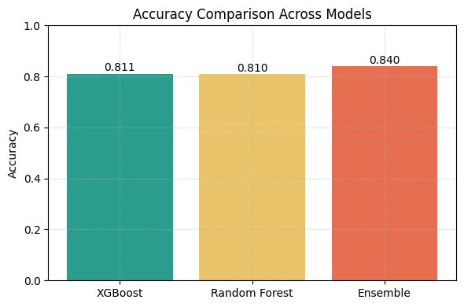

Overall Model Accuracy
The Ensemble model achieves the highest accuracy of 84.0%, outperforming both XGBoost and Random Forest. By combining multiple models, it ensures more reliable and stable predictions.
- Best Performance: Ensemble Model
- Accuracy: 0.840
- Advantage: Improved robustness through model combination